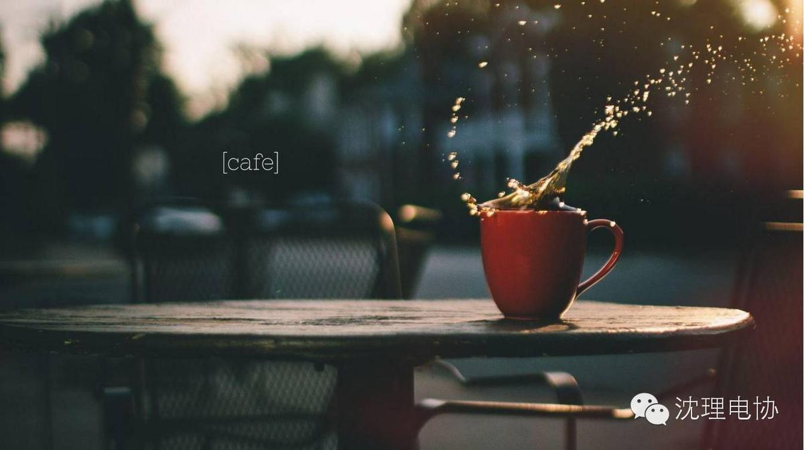

周末美文，给周末加点料。
大多数人想要改造这个世界，但却很少有人想改造自己。柯罗连科说过，“生活就是战斗。”其实，我们自身已经有了很多很多的不足，人类最大的敌人就是自己，那么，为何不向自己宣战呢？虽然我们并非勇士，但我们必须去尝试，不试着飞起来的鸟儿，是永远不能把鸟巢筑在树枝上的。

也许，今日的战争让你满是伤痕，让你疲惫不堪，但是，总有一天，待你回头看的时候，你将会看到那累累的战绩以及那些丰厚的战功。不要害怕，不要退缩，该面对的终究是要面对的。只要你有决心，有毅力，肯吃苦，有自信，就不可能败给自己。知道这么一句话么，只要心不死，意志不灭，生命就永远是美丽的。随着时间的推移，你会渐渐发现，你赢回的不仅仅是那份荣誉，而是一种任何物质都换取不来的精神，经验，以及一颗最鲜活的心。
也许，这场战争要经历非常漫长的时间，但你必须要有耐心，不能就此放弃。如果你等不及，你就永远等不到。是的，揭开伤疤是残酷的，但只有见过阳光的伤疤才能康复。当然，挑战自我，有可能也是残酷的，但是，只有在这场腥风血雨的战争过后，我们才能看见自己最棒的一面。人生本是单调的，但是，挑战自我就能给我们空白的人生涂上最美丽的色彩，或绚烂，或平淡。如果你还没加入这场对自己的挑战，那么，请开始备战。决心是我们的马匹，勇气是我们的刀枪，信心是我们的军粮。只要我们勇敢的迈出第一步，勇往直前，永不退缩。我们自身的强项是我们的战友，让我们与战友们携手，消灭邪恶的思想，击败不好的习惯。久而久之，你的军队会日益庞大，那些阻碍你成功的敌人，将会被一个个歼灭。朋友们，请记住，纵然步履维艰，也要把生活谱成一曲金色的旋律。
挑战自我吧，也许人生战争的号角刚刚吹响，不久之后，将会硝烟弥漫，但只要努力，很快，硝烟就会散去。那时，你将会看见希望的曙光，嗅到胜利的芬芳。